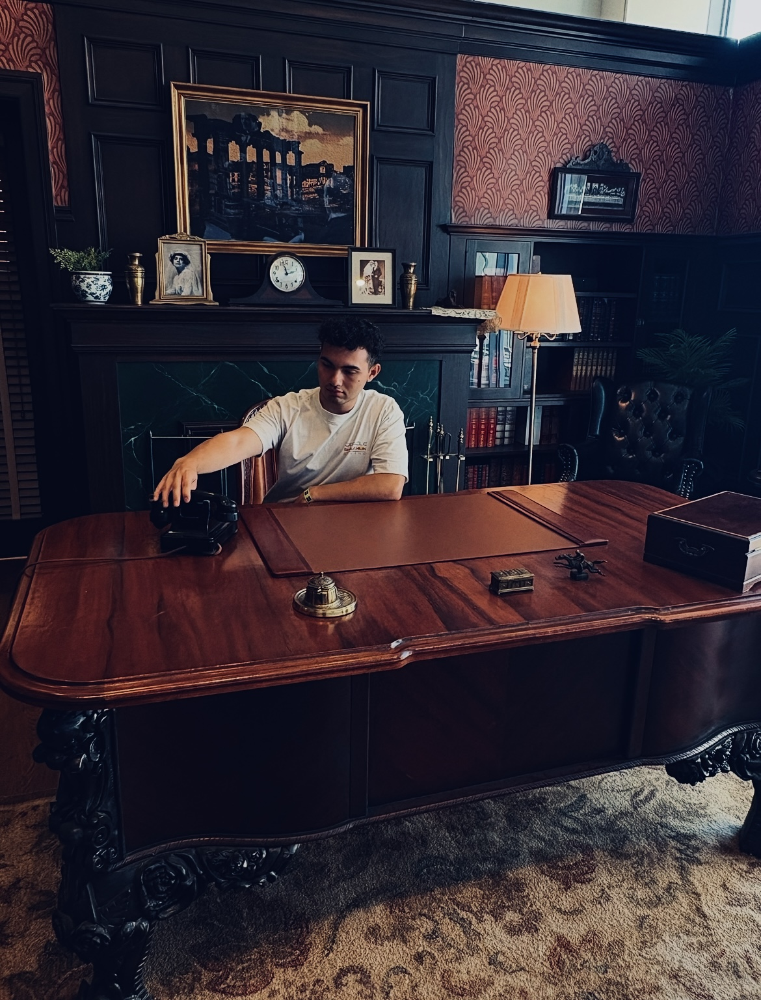

My name is Julian Sylvester and I am currently a fourth year Biology student at the University of California, Riverside. After I receive my degree in Biology I plan to continue my academic endeavors by attending a nursing program in hopes of becoming a Certified Registered Nurse Anesthetist (CRNA). Some hobbies that I enjoy include cooking, hiking, playing video games, and watching and rating movies. This page showcases coursework and projects developed while learning data and web skills in BIOL 101.
A webpage created using HTML and CSS while learning about how websites and web servers work.
View Project